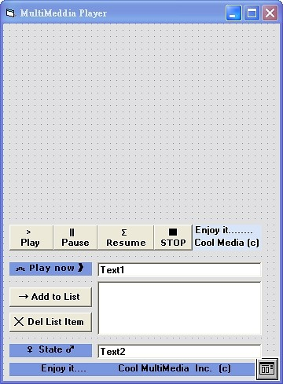
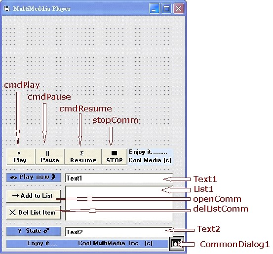

Television Engineering
Multimedia Player
$author: Ching-Wen (Ed) Lai
$date: May. 2003
$revised: Mar. 2018
$keywords: television, engineering, multimedia, player
An implementation of Multimedia Player
Content
Concept
設計一多媒體程式, 可以播放AVI與MIDI類型的多媒體檔案。
Requirements
- Visual Basic 6.0
Background
- 使用
Visual Basic的 API 中的MCI(Media Control Interface)語音播放函式, 播放多媒體檔. - 在程式內即是利用API 的
mciSendString函式,來播放*.wav,*.mid,*.avi檔. - 宣告 API 函數,在表單或模組作以下宣告
Public Const WS_CHILD = &H40000000
Declare Function mciSendString Lib "winmm" Alias "mciSendStringA" (ByVal lpstrCommand As String, ByVal lpstrReturnString As String, ByVal uReturnLength As Long, ByVal hwndCallback As Long) As Long
Public FrameNO As Integer
- 使用
mciSendString函數播放多媒體檔
Ret=mciSendString ("MCI Command",0,0,0 )
-
以
flags參數指定方式播放語音檔 -
ret 為呼叫 mciSendString 的傳回值 其值為 0 代表失敗,為 1 代表成功
-
MCI Command Strings
| MCI Command Strings | Parameters | Function |
|---|---|---|
| open | 設備名稱 [tape 設備形式] [alias 別名 ] |
開啟設備 |
| close | 設備名稱 | 關閉 |
| play | 設備名稱 | 播放 |
| pause | - | 暫停 |
| resume | 設備名稱 | 恢復播放 |
| seek | 設備名稱 [ to 位置 | to start | to end ] |
移到 |
| stop | 設備名稱 | 停止 |
GUI Interface
- 表單設計

- 播放區: 最頂端為 播放區 ,放映多媒體檔案
- 播放清單: 可加入五筆資料 雙擊播放清單可播放選定的曲目
- Play: 播放選定的曲目
- Pause: 暫時停止播放
- Resume: 解除暫停播放的狀態 繼續播放
- STOP: 停止播放
- Add to List: 開啟通用型檔案對話盒 將所選定的檔案加入 播放清單
- Del List Item: 刪除播放清單內的選定的資料
- Play now: 目前播放的曲目
-
State: 顯示系統狀態
-
物件重要屬性值

| 物件 | Name (物件名稱) |
|---|---|
| Buttom | cmdPlay |
| Buttom | cmdPause |
| Buttom | cmdResume |
| Buttom | stopComm |
| Text Text1 | Text1 |
| Text Text2 | Text2 |
| List List1 | List1 |
| Buttom | openComm |
| Buttom | delListComm |
| CommonDialog | CommonDialog1 |
Programming
Dim item(5) As String
Dim sel As Integer
Dim delCounter As Integer
Private Sub cmdPause_Click()
Ret& = mciSendString("pause Animation", 0&, 0, 0)
cmdPause.Enabled = False
cmdResume.Enabled = True
End Sub
Private Sub cmdPlay_Click()
cmdPause.Enabled = True
cmdResume.Enabled = False
Call List1_DblClick
End Sub
Private Sub cmdResume_Click()
Ret& = mciSendString("resume Animation", 0&, 0, 0)
cmdPause.Enabled = True
cmdResume.Enabled = False
End Sub
Private Sub Command1_Click()
Form_Unload (True)
End Sub
Private Sub delListComm_Click()
If List1.ListIndex <> -1 Then
Text2 = "刪除" + item(List1.ListIndex)
delCounter = Val(List1.ListIndex)
List1.RemoveItem List1.ListIndex
If sel < 6 Then
For delCounter = delCounter To sel
item(delCounter) = item(delCounter + 1)
Next
End If
sel = sel - 1
If sel = -1 Then
delListComm.Enabled = False
End If
Else
Text2 = "播放清單是空的"
delListComm.Enabled = False
End If
End Sub
Private Sub Form_Load()
Form1.Show
delListComm.Enabled = False
Text1 = "使用 Add to List 加入播放清單"
sel = -1
End Sub
Private Sub Form_Unload(Cancel As Integer)
Ret& = mciSendString("close Animation", 0&, 0, 0)
End Sub
Private Sub List1_DblClick()
If List1.ListIndex > -1 Then
Call mciSendString("close Animation", 0, 0, 0)
cmdPlay.Enabled = False
CmdString$ = ("open " + item(List1.ListIndex) + " type MPEGVideo alias Animation parent " + Str$(Form1.hWnd) + " style " + Str$(WS_CHILD))
Ret& = mciSendString(CmdString$, 0&, 0, 0)
Ret& = mciSendString("break Animation on 114", 0&, 0, 0)
Ret& = mciSendString("set Animation time format frames", 0&, 0, 0)
Ret& = mciSendString("put Animation window at 10 10 320 240", 0&, 0, 0)
Ret& = mciSendString("play Animation", 0&, 0, 0)
Text1 = item(List1.ListIndex)
Else
Text1 = "請選擇曲目"
End If
End Sub
Private Sub openComm_Click()
If sel < 4 And sel > -2 Then
CommonDialog1.ShowOpen
List1.AddItem CommonDialog1.FileName
sel = sel + 1
Text2 = "加入 " + CommonDialog1.FileName + " 至播放清單"
item(sel) = CommonDialog1.FileName
delListComm.Enabled = True
Else
Text2 = "播放清單已滿,請移除不需要的清單資料"
End If
End Sub
Private Sub stopComm_Click()
Call mciSendString("close Animation", 0, 0, 0)
cmdPlay.Enabled = True
End Sub
Running

- 按下
Add to List將影片加入播放清單, 雙擊播放清單內的Item即可播放多媒體檔案 , - 播放中可以按下
Pause暫停,Resume繼續, 或STOP停止播放。 若需將該筆資料由播放清單內移除,請按Del List Item。